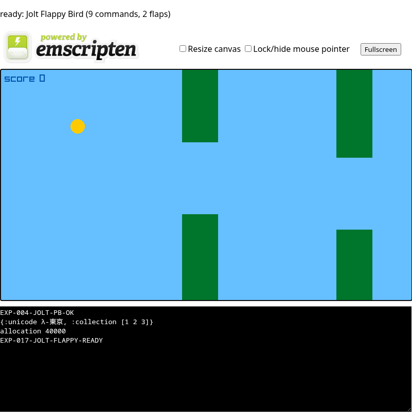

EXP-017: Flappy Bird in Jolt
A browser adaptation of raylib-jlt’s Flappy Bird example. Jolt owns persistent state, physics, pipes, collision, scoring, restart behavior, and per-frame scene generation.
Updated upstream: built with unmodified Jolt 6cb7d2ec, containing merged PRs #801 and #802. EXP-017 uses scalar defcfn only, so #802’s layout/write breaking changes do not alter its source.
Play the embedded build
Press Space or click the canvas to flap. Fly the gold bird through the green pipe gaps.
Not loaded (26 MB).What stayed in Jolt
Model
defonce game stores bird position/velocity, score, game-over state, and three pipe maps.
Update
Jolt executes gravity, flap, scrolling/recycling, pass scoring, collision, bounds, and restart every browser frame.
View
Jolt generates background, six pipe rectangles, bird circle, score, and optional game-over commands.
Minimal host
C only polls Space/click, calls the live Jolt frame! Var, interprets generic drawing commands, and owns Raylib scheduling.
Representative Jolt source
See the complete EXP-017 source and experiment report.
(defonce game (atom (new-game)))
(defn frame! []
(let [flap? (= 1 (project-flap-pressed))
st (if (:over? @game)
(if flap? (new-game) @game)
(step @game flap?))]
(reset! game st)
(upload-scene! (scene-commands st))))
;; step retains the source example's gravity/flap, pipe transforms,
;; pass scoring, collision, bounds, and game-over state transitions.Verified result

Automation consumed both Space and left-click over 39 Jolt-driven frames. The inspected capture shows nine commands, two flaps, a raised gold bird, scrolling pipe pairs, and score. Browser isolation passed with no page exception. Artifact hashes.